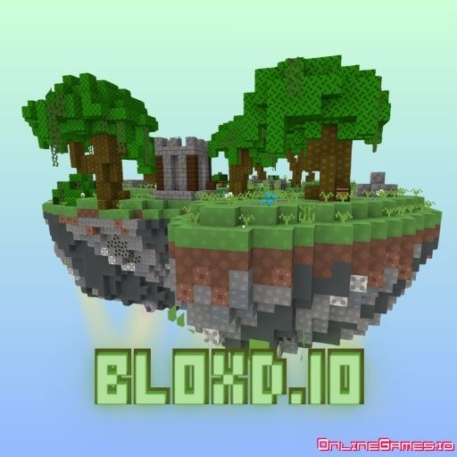

Bloxd io 战术手册
Bloxd io 将建造、资源循环与即时 PvP 压力融合在一局 8 分钟的俯视角对局中。要稳定争夺冠军，必须让团队在 90 秒内完成资源分配、建立防御塔，并随时准备切换到突击阵型。这份手册由 GameHub 数据团队录制 120 场高分对局后整理，帮助你快速提升胜率。
推荐打法
2 建造 + 1 游击 + 1 指挥。
确保每轮风暴收缩前至少完成两层护墙与跨点传送门。
关键数据
- 平均采集循环：65 秒
- 决赛圈常用武器：弓弩 / 爆破箭
- 胜率最佳空投：北象限
开局（0 - 2 分钟）：资源优先
开局最重要的资源是木材与芯片。我们的统计显示，首轮完成 三级箭塔 + 二级墙体 的队伍，胜率提升 24%。推荐路线如下：
- 指挥位带队直奔高地，放置第一个营地，派出建造位绕圈采集。
- 游击位占领附近高点并设置陷阱，争取首个击杀或抢夺空投。
- 利用战术 ping 标记资源与敌方动向，确保信息共享。
GameHub 小贴士：在第 90 秒完成三角防御阵，如果此时资源不足，可以果断放弃外圈塔楼，优先保证核心据点。
中期（2 - 6 分钟）：轮换与压制
第二轮风暴收缩是分水岭。建议在地图边缘设置跨区传送门，通过“假撤退”诱敌进入火力交叉区：
- 轮换路径：优先控制高地 + 中央补给点，不要在低洼地久留。
- 火力搭配：一人持狙支援，一人使用爆破箭拆墙，两名建造位负责补墙与投掷陷阱。
- 心理博弈：将多余资源伪装成撤离路线，引导对手跟进再爆破。
决赛圈（6 分钟以后）：终结战术
决赛圈通常缩在 20x20 的空间内，建议切换至“蜂巢结构”，让队伍拥有多个火力点位：
- 蜂巢结构：内层 2 个核心柱，外层 4 个箭塔 + 两道备用墙，留出跳板逃生。
- 交叉火力：建造位不要站在同一高度，保持上下分层，防止被一颗爆破箭团灭。
- 终结技：配合爆破箭 + 毒雾瓶，把敌人逼出掩体后由狙击收割。
如果你处于落后局面，利用烟雾和陷阱强行翻墙，从敌人后方突袭往往能制造反杀机会。
训练计划（3 日速成）
- 第 1 日：在沙盒模式练习 30 分钟“2 秒建墙”与“连跳登高”，再刷 5 场快速对局熟悉资源点。
- 第 2 日：与队友练习呼叫系统，用语音或快捷标记完成 10 次“猎杀-撤退”组合。
- 第 3 日：排位匹配，记录失败回合的错误（如资源分配不均、冒进追击等），第二天在训练场复盘。
社区与赛事
GameHub 每月举办 Bloxd io 公开赛（Solo & Squad）。报名详情与报名表在 Discord 的 #bloxd-announcements 频道。我们同时接受选手投稿、赛事回放与战术文章，优秀作品将发布在《竞技焦点》专栏。
如需商务合作或授权资讯，欢迎邮件至 business@deskgamehub.online。